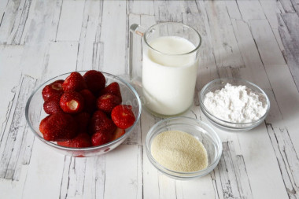
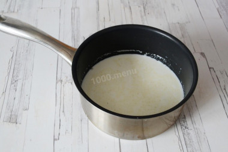
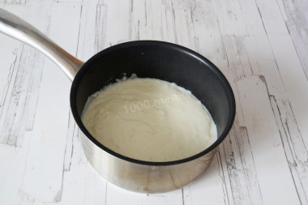
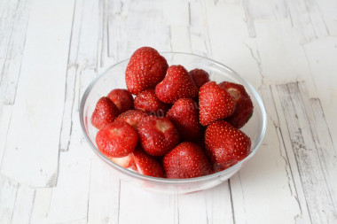
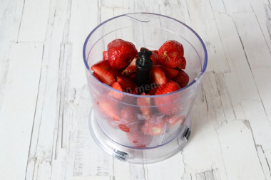
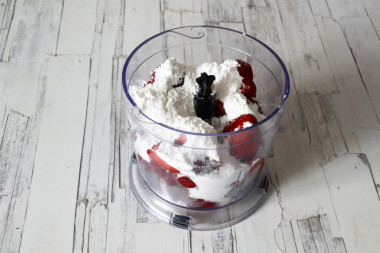
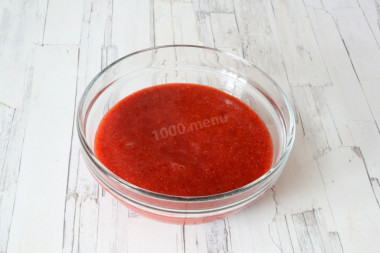
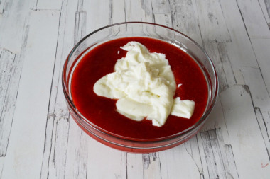
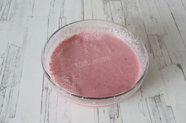
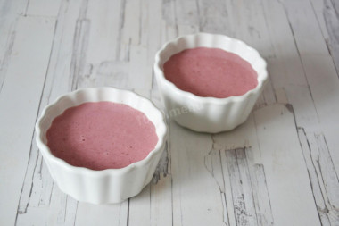

Сегодня мы с вами приготовим Клубничный мусс на манной крупе без желатина
Сытный клубничный мусс для летнего завтрака. Недавно я обещала выложить второй рецепт клубничного мусса, приготовленного без использования желатина. Плотность муссу здесь придает манная крупа, а вернее вязкая манная каша на молоке. Главное хорошо разварить манную крупу, чтобы она не чувствовалась в готовом муссе. А иначе десерт будет очень похож на обычную клубничную манную кашу. Поэтому чтобы мусс был нежнее по текстуре, лучше взбить готовую клубнично-манную массу блендером. Он измельчит крупицы манной крупы и они чувствоваться не будут.
Посмотрим пошаговую инструкцию, как приготовить наш мусс:

- Шаг 1. Подготовить ингредиенты.Чтобы приготовить мусс из клубники на манной крупе без желатина нам понадобится: спелая ароматная клубника, молоко, манная крупа и ванильный сахар.

- Шаг 2. Молоко соединить с манной крупой и при постоянном помешивании сварить на медленном огне густую манную кашу.

- Шаг 3. Манную кашу охладить. По мере охлаждения она еще больше загустеет. Чтобы поверхность каши не покрылась пленочкой, желательно накрыть сотейник крышкой или накрыть пищевой пленкой "в контакт" с кашей.

- Шаг 4. Клубнику вымыть, обсушить и удалить хвостики.

- Шаг 5. Выложить клубнику в чашу блендера.

- Шаг 6. Добавить сахарную пудру.

- Шаг 7. Взбить до получения однородного пюре. Если вы используете замороженную клубнику, то предварительно разморозьте. И взбивайте в этом случае чем дольше, тем лучше. Готовое клубничное пюре при желании можно протереть через сито, чтобы удалить мелкие семена.

- Шаг 8. Добавить в клубничное пюре манную кашу.

- Шаг 9. Взбить миксером до посветления массы. Если вы решили оставить семечки и не протирать пюре через сито, то чтобы мусс был более нежным по консистенции, можно вместо миксера использовать блендер.

- Шаг 10. Перелить мусс в креманки и поставить в холодильник на 2-3 часа.
- Финал. Перед подачей украсить мусс клубникой и мятой. Приятного аппетита!
Наслаждайтесь вкусным муссом, не забудьте поделиться с близкими!
{kind=link}